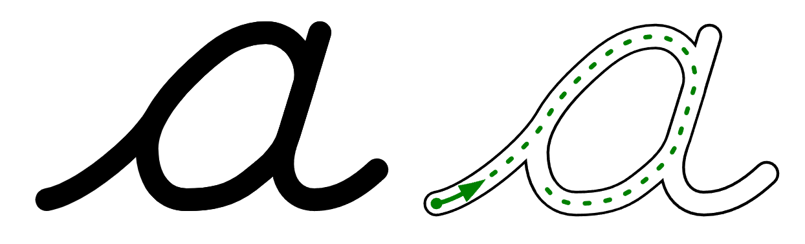

Cogncur Feature Guide
Font styles
Slant
The Cogncur fonts are available at three slants.
Cogncur Vertical is written upright. The slant is 90°.
The quick brown fox jumps over the lazy dog.
Cogncur Regular is written at a slant of 82.5°, or 7.5° from the vertical. The word 'Regular' is omitted from the font files.
The quick brown fox jumps over the lazy dog.
Finally, Cogncur Oblique is written at a slant of 75°, or 15° from the vertical.
The quick brown fox jumps over the lazy dog.
Typeface features
This section explains what the font family looks like, and why it was designed that way.
Loops and sticks
The letters b, h, l, and k have a tall loop. The letters g, j, and y have a low loop. Tall loops cross themselves exactly on the waist line (sometimes call 'midline'). Low loops
cross themselves on the baseline. Tall and low loops are rotationally symmetrical images of each other.
Cogncur: loops cross themselves at the waist line or at the baseline
All loops have a long, straight downstroke, that is parallel to other downstrokes, such as those in the legs of the letter m.
Cogncur: loops have a straight downstroke that is parallel to other downstrokes
The letters d and p do not have a loop but a stick. The length of the sticks can be shortened with stylistic set ss03.
dip
Cogncur: d and p (default)
dip
Cogncur: d and p (variant)
The letters f and q have a low, forward loop. However, the font also provides variants of these letters without a loop. [TODO: see Customization guide]
quaff
Cogncur: f and q (default)
f
Cogncur: variants of f
qu u u u u
Cogncur: variants of q
The letter z does not have a loop.
(Almost) no pencil lifts for lowercase
All lowercase letters except i, j, and x are written without lifting the pen.
a b c d e f g h i j k l m
n o p q r s t u v w x y z
A more print-like t is also available through stylistic set ss08.
toot
Cogncur: t (default)
toot
Cogncur: t (variant)
Didactic tip: lowercase cursive is exemplary cursive. It avoids pencil lifts, and to do so, the student must often trace the pen 'back' over a previous stroke. Uppercase cursive contains more pencil lifts, more unique elements, and more 'inconsistencies' than lowercase cursive. Teach lowercase cursive before uppercase.
Arches
The arch is the shape that occurs in the body of the letters n and u, and is one of the defining features that characterizes a font. Arches in Cogncur are asymmetrical and their height is 1.618 times the distance between their legs. Arches are written without lifting the pen. In the case of n, the pen traces back up over the first leg and then 'branches out' into the arch. Although somewhat obscured by the thickness of the stroke, in Cogncur this 'branching out' point is located exactly halfway between the baseline and the waistline. Likewise, the letter u has a 'branching in' point which is also located halfway between the baseline and the waistline.
Other lowercase letters also contain arches. In Cogncur, the width of the arch is not adjusted for wide letters such as m and w. The letter m is therefore twice as wide as the letter n. Note that the letter w contains only a single arch; the third 'leg' has no straight segment, but is simply the same curved upstroke that is also found in the letters b and v.
n m h u w
Cogncur: letters with arches
Teardrop counters
In the German and American cursive tradition, the counters of the letters a, d, g, and q have a round shape, just like in print. This is problematic in handwriting, not just because shapes with lots of symmetry can be hard to get exactly right, but also because a circle or oval does not have a defined starting point and can just as easily be written clockwise as anticlockwise.
In italic handwriting, counters typically start from the wais line, resulting in a lopsided 'teardrop' shape. This has clear advantages for learners: the teardrop has a clearly defined starting point - on the waist line - and it's impossible to accidentally continue the clockwise entry stroke (or connecting stroke) through the intended starting point of the counter. The Cogncur fonts use the italic style 'teardrop' counters.
Cogncur: the (nearly) straight angles in the teardrop counters
remind students to 'turn back' and move the pen counterclockwise

D'Nealian: the round shape of the counter
allows an incorrect clockwise construction
The letter p contains a version of the teardrop counter that is rotated by 180°. There is also a variant of p that doesn't have a counter but an open arch (stylistic set ss16), and variants that start with a curve (ss15).
d p
Cogncur: d and p (default)
Cogncur: p (variants)
Counters have a 'branching in' point (a, d, g, and q) or a 'branching out' point (p) just like arches do. These points are located halfway between the baseline and the waist line, just like with the arches.
Cogncur: counters branch out and in just like arches